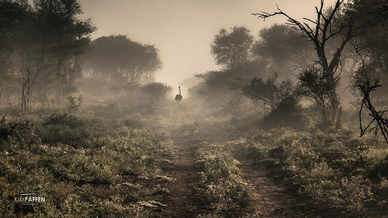
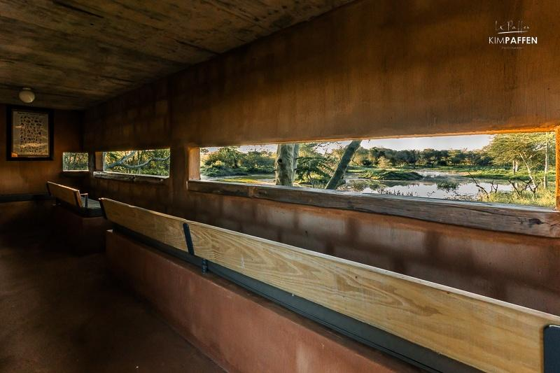
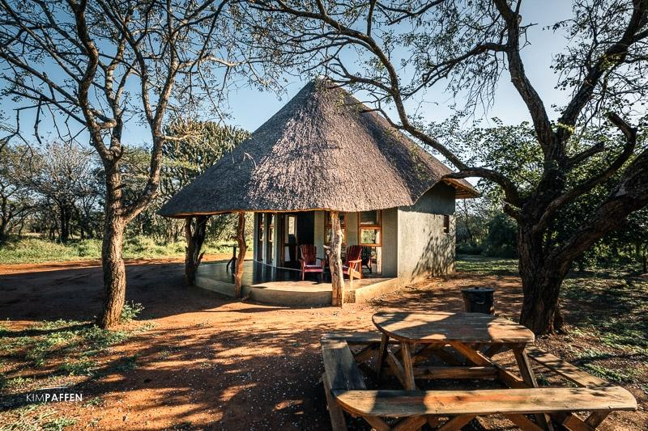

Sebelumnya tempat ini dikenal sebagai N isela Safaris, tetapi dengan diambil alih oleh Taman Buru Besar Eswatini, taman ini dikelola dan diberi nama baru. .

Tidak ada predator di taman tersebut, hanya impala, nyala, kudu, reedbuck, wildebeest, zebra, jerapah, burung unta, duiker biasa, babi hutan, dan banyak burung, termasuk raptor.

KaMsholo Bushveld Safaris juga memiliki tempat persembunyian 2 tingkat yang menghadap ke kolam air tempat Anda dapat melihat banyak burung dan bahkan biawak air!

Saat kami mengunjungi KaMsholo Bushveld Safaris, kami menginap di dalam taman di Tinsele Rest Camp , sebuah pondok mandiri.